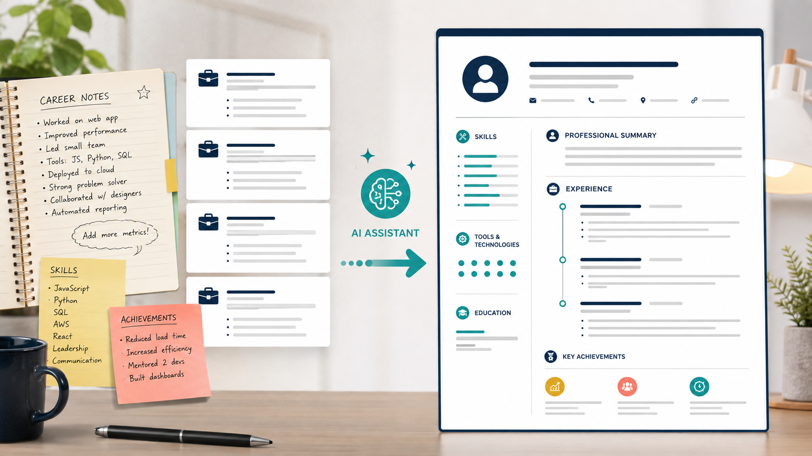

Промтзилла
Резюме становится сильнее, когда ИИ не просто переписывает опыт красивыми словами, а вытаскивает измеримые результаты и подгоняет акценты под вакансию.

Пошаговая инструкция
- 1Собери опыт, проекты, навыки и достижения в сыром виде.
- 2Добавь текст вакансии, под которую нужно адаптировать резюме.
- 3Попроси ИИ найти сильные факты и убрать общие фразы.
- 4Сделай версию на одну страницу и расширенную версию.
- 5Проверь, что все цифры и факты правдивые.
Какой результат просить
Нужен не универсальный шаблон, а резюме под конкретную роль: с правильными ключевыми словами и доказательствами результата. Для такой задачи можно открыть Study24 AI, дать вводные и попросить несколько вариантов под разные цели.
Промт
RU
Помоги написать сильное резюме. Мой опыт: [вставь опыт, проекты, навыки, образование] Вакансия: [вставь описание вакансии] Сделай: — профессиональное summary на 3-4 строки; — блок навыков под вакансию; — описание опыта через достижения и цифры; — список слабых мест, которые стоит уточнить; — версию резюме на одну страницу. Не выдумывай опыт, компании, должности и цифры. Если данных не хватает, задай уточняющие вопросы.
EN
Help me write a strong resume. My experience: [paste experience, projects, skills, education] Job posting: [paste job description] Create: — a professional 3-4 line summary; — skills section tailored to the job; — experience descriptions focused on achievements and metrics; — weak points that need clarification; — a one-page resume version. Do not invent experience, companies, job titles, or numbers. If information is missing, ask clarifying questions.
Важно
ИИ может красиво сформулировать лишнее. Всё, что выглядит как факт, должно быть правдой и подтверждаться твоим опытом.
Теги